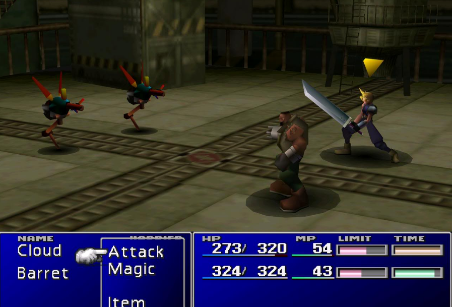
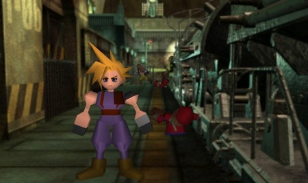
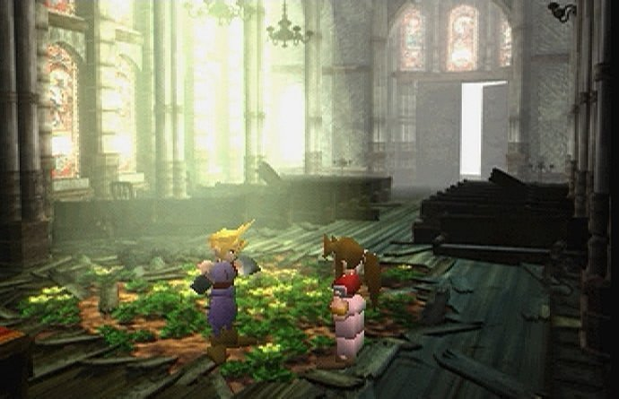
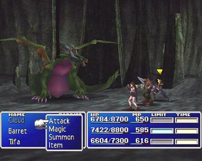

Game Zone
Welcome to Game Zone

Final Fantasy VII
|  |  |
|  |  |
Las batallas, que o bien se producen aleatoriamente en el mapa o se desencadenan mediante ciertos eventos, enfrentan al grupo del jugador contra uno o más enemigos. Ganar la batalla al derrotar a todos los enemigos conlleva adquirir experiencia, gil, y elementos. Sin embargo, si todos los miembros del grupo quedan simultáneamente fuera de combate o son incapaces de continuar la batalla (al ser petrificados, por ejemplo), el juego acaba y el jugador debe reanudar la partida desde el último punto de guardado. La escena de batalla es una representación del área en 3D, como el interior de un edificio o un prado, en la cual el jugador dirige a los personajes en batallas contra enemigos controlados por la CPU. Mientras que los personajes presentan una estética super deformed en los escenarios por donde se desplazan, los modelados de los personajes lucen un aspecto más realista y proporcionado en los combates. Final Fantasy VII es el primer juego de la saga en presentar modelos de los personajes completamente renderizados con polígonos, en vez de hacerlo con sprites bidimensionales. Durante las secuencias de batalla, el juego utiliza el recurrente sistema de "Batalla de tiempo activo" (BTA) utilizado por primera vez en Final Fantasy IV. A diferencia de juegos anteriores de la saga que permitían participar a cuatro o cinco personajes jugables en combate, Final Fantasy VII sólo permite tres personajes por batalla.
El sistema de habilidades en Final Fantasy VII se basa en el uso de la Materia —orbes mágicos que se componen de energía Mako condensada (la forma de energía del planeta), que se colocan en ranuras especiales en las armas y armaduras, permitiendo al jugador personalizar las habilidades de su grupo para usar magia, invocaciones, y habilidades especiales. La Materia está dividida en cinco categorías; Materia verde o de magia para conjurar encantamientos ofensivos y defensivos, Materia amarilla o de comando que otorga nuevas habilidades, Materia roja o de invocación que permite al personaje invocar monstruos, Materia morada o independiente que proporciona un incremento en los atributos del personaje que la lleve equipada, y Materia azul o de apoyo que mejora a otra Materia cuando se colocan en ranuras conectadas (por ejemplo, enlazando la Materia Fuego con la Materia Todos permite al personaje atacar a todos los enemigos simultáneamente al conjurar Fuego). Sin embargo, la mayoría de Materia basada en magia disminuye los atributos físicos del personaje que la lleve equipada. Al igual que los personajes, la Materia puede subir de nivel con experiencia, desbloqueando habilidades y funcionalidades más fuertes, llegándose a crear nueva Materia una vez haya alcanzado el máximo nivel. Las invocaciones se presentan en el juego, equipables con Materia, mediante ataques con elaboradas animaciones. Una versión modificada de los Ataques Desesperados de Final Fantasy VI aparecen en Final Fantasy VII rebautizados como "Límite". Cada personaje jugable dispone de una barra que va llenándose gradualmente conforme van sufriendo daños en la batalla. Cuando la barra está completamente llena, el personaje es capaz de desencadenar su Límite, un ataque especial que generalmente inflige un daño significativamente mayor en los enemigos que los ataques normales, o en su defecto ayudan al grupo en la batalla. A diferencia de la Materia, cada personaje tiene su propio conjunto único de Límites, los cuales se dividen en cuatro niveles de intensidad, aunque un personaje, Cait Sith, dispone sólo de dos.
Noticias

We add new free website templates frequently.
You can remove any link to our websites from this template you're free to use the template without linking back to us.

This is just a place holder so you can see how the site would look like.
The template is designed by free website templates for you for free you can replace all the text by your own text.
Play Now


Template Beauty
If you're looking for beautiful and professionally made templates you can find them at Template Beauty.